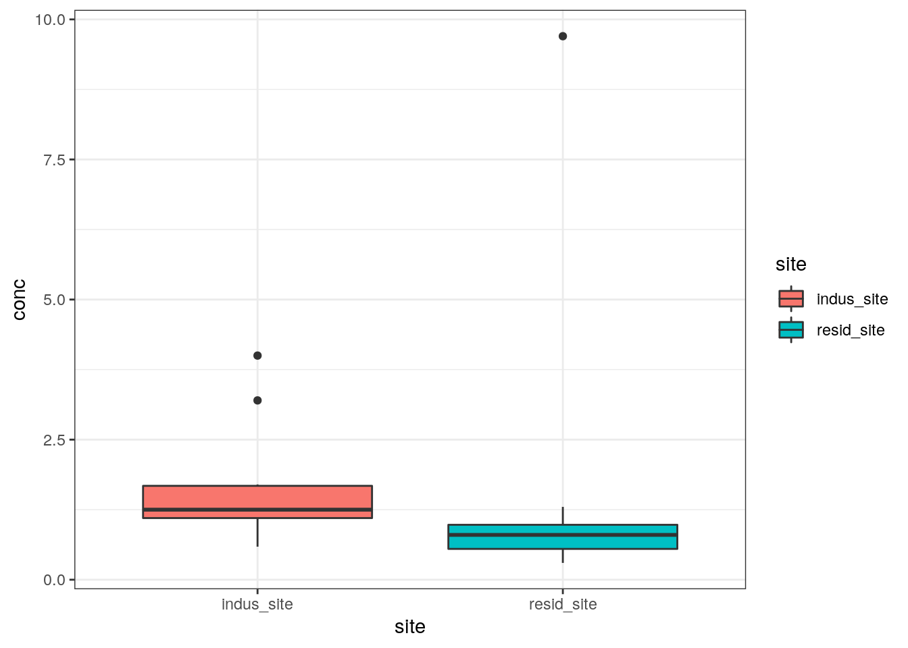
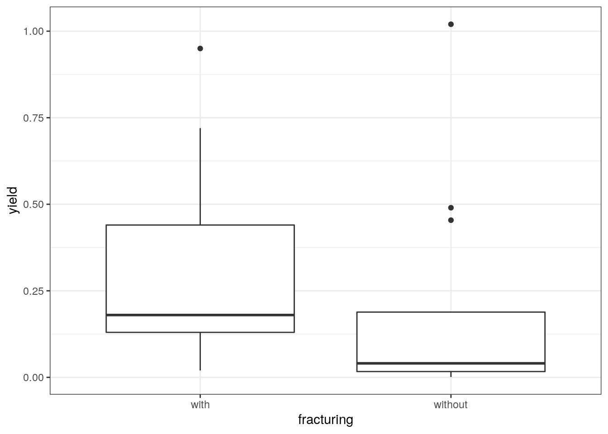

Chapter 5 Differences between Two Independent Groups
Wells upgradient and downgradient of a hazardous waste site are sampled to determine whether the concentrations of some toxic organic compound known to reside in drums at the site are greater in the downgradient wells. Are they greater at the α = 0.01 significance level? If so, the ground water is declared to be contaminated, and the site will need to be cleaned up.
Measurements of a biological diversity index are made on sixteen streams. Eight of the streams represent “natural” conditions, while the other eight have received urban runoff. Is the biological quality of the urban streams worse than that of the “natural” streams?
Unit well yields are determined for a series of bedrock wells in the Piedmont region. Some wells tap areas where fracturing is prevalent, while other wells are drilled in largely unfractured rock. Does fracturing affect well yields, and if so how?
These are examples of comparisons of two independent groups of data, to determine if one group tends to contain larger values than the other. The data are independent in the sense that there is no natural structure in the order of observations across groups – there are no pairings of data between observation 1 of group 1 and observation 1 of group 2, etc. Where such a pairing does exist, methods like those of Chapter 6 should be used. In some cases it is known ahead of time which group is expected to be larger (a one-sided test), and in other cases it is not (a twosided test). This chapter will present and discuss the rank-sum test, a nonparametric procedure for determining whether two independent groups differ. In the special case where the data within each group are known to be normally distributed, and the differences between the groups are additive, the t-test may also be used. Graphical presentations of the test results will be quickly surveyed. Finally, methods for estimating the magnitude of the difference between the two groups are presented, including the Hodges-Lehmann estimator, one of a class of efficient and resistant nonparametric estimators unfamiliar to many water resources scientists.
5.1 The Rank-Sum Test
The rank-sum test goes by many names. It was developed by Wilcoxon Wilcoxon (1945), and so is sometimes called the Wilcoxon rank-sum test. It is equivalent to a test developed by Mann and Whitney near the same time period, and the test statistics can be derived one from the other. Thus the Mann-Whitney test is another name for the same test. The combined name of Wilcoxon-Mann-Whitney rank-sum test has also been used.
5.1.1 Null and Alternate Hypotheses
In its most general form, the rank-sum test is a test for whether one group tends to produce larger observations than the second group. It has as its null hypothesis:
H0: Prob [x > y] = 0.5
where the x are data from one group, and the y are from a second group. In words, this states that the probability of an x value being higher than any given y value is one-half. The alternative hypothesis is one of three statements:
H1: Prob [x > y] ≠ 0.5 (2-sided test -- x might be larger or smaller than y).
H2: Prob [x > y] > 0.5 (1-sided test -- x is expected to be larger than y)
H3: Prob [x > y] < 0.5 (1-sided test-- x is expected to be smaller than y).Note that no assumptions are made about how the data are distributed in either group. They may be normal, lognormal, exponential, or any other distribution, They may be uni-, bi- or multi-modal. In fact, if the only interest in the data is to determine whether one group tends to produce higher observations, the two groups do not even need to have the same distribution!
Usually however, the test is used for a more specific purpose – to determine whether the two groups come from the same population (same median and other percentiles), or alternatively whether they differ only in location (central value or median). If both groups of data are from the same population, about half of the time an observation from either group could be expected to be higher than that from the other, so the above null hypothesis applies. However, now it must be assumed that if the alternative hypothesis is true, the two groups differ only in their central value, though not necessarily in the units being used. For example, suppose the data are shaped like the two lognormal distributions of figure 5.1. In the original units, the data have different sample medians and interquartile ranges, as shown by the two boxplots. A rank-sum test performed on these data has a p-value of <0.001, leading to the conclusion that they do indeed differ. But is this test invalid because the variability, and therefore the shape, of the two distributions differs? Changing units by taking logs, the boxplots of figure 5.2 result. The logs of the data appear to have different medians, but similar IQR’s, and thus the logs of the data appear to differ only in central location. The test statistic and p-value for a rank-sum test computed on these transformed data is identical to that for the original units! Nonparametric tests possess the very useful property of being invariant to power transformations such as those of the ladder of powers. Since only the data or any power transformation of the data need be similar except for their central location in order to use the rank-sum test, it is applicable in many situations.
Figure 5.1: Boxplots of two lognormal distributions with different medians and IQRs.
Figure 5.2: Boxplots of the logarithms of the figure 5.1 data. Medians still differ, while IQRs are the same.
5.1.2 Computation of the Exact Test
The exact form of the rank-sum test is given below. It is the only form appropriate for comparing groups of sample size 10 or smaller per group. When both groups have samples sizes greater than 10 (n, m > 10), the large-sample approximation may be used. Remember that computer packages report p-values from the large sample approximation regardless of sample size.
Exact Version of the Rank-Sum test!
Situation Two independent groups of data are to be compared. The sample size for the smaller of the two groups xi, i=1,…n is designated n, while the larger sample size yj, j=1,…m is designated m.
Test Statistic Compute the joint ranks Rk. Rk = 1 to (N = n + m), using average ranks in case of ties.
The exact test statistic \(W_{rs}\) = sum of ranks for the group having the smaller sample size, = \(ΣR_i\) i=1,n (use either group when sample sizes are equal: n = m)
Decision Rule. To reject H0 : Prob [x > y] = 0.5
- H1 : Prob [x > y] ≠ 0.5 (the smaller data set tends to have either higher or lower values than the larger data set)
Reject H0 if \(W_{rs} ≤ x^*_{α/2,n,m}\) or \(W_{rs} ≥ x_{α/2,n,m}\) from Table B4 of the Appendix; otherwise do not reject H0.
- H2 : Prob [x > y] > 0.5 (the smaller data set tends to have higher values than the larger dataset)
Reject H0 if \(W_{rs} ≥ x_{α,n,m}\) from Table B4; otherwise do not reject H0.
- H3 : Prob [x > y] < 0.5 (the smaller data set tends to have lower values than the larger data set)
Reject H0 if \(W_{rs} ≤ x^*_{α,n,m}\) from Table B4; otherwise do not reject H0.
Example 1.
Precipitation quality was compared at sites with different land uses by Oltmann and Shulters Oltmann and Shulters (1989). A rank-sum test is used to determine if one of the constituents, ammonia plus organic nitrogen, significantly differs (α = 0.05) between the industrial and residential sites.
H0 : median concentration (industrial) = median concentration (residential)
H3 : median concentration (industrial) ≠ median concentration (residential).The 10 observations at each site are assigned ranks from 1 to 20 as follows. Note that three pairs of concentrations (at 0.7, 1.1, and 1.3 mg/L) are tied, and so are assigned tied ranks equal to the average of their two individual ranks:
Ammonia plus organic nitrogen concentration (in mg/L) in precipitation
Wrs = sum of the 10 ranks for the residential site (n=m=10, so either could be used) = 78.5
For this two-sided test, reject H0 if \(W_{rs} ≤ x^*_{α/2,n,m}\) or \(W_rs ≥ x_{α/2,n,m}\). From Table B4, \(x^*_{.026,10,10} = 79\) and \(x^*_{.022,10,10} = 78\). Interpolating halfway between these for Wrs = 78.5, the p-value for the two-sided test is 0.024•2 = 0.048, and the decision would be to reject H0 at α = 0.05. Reporting the p-value shows how very close the risk of Type I error is to 0.05. The conclusion is therefore that ammonia plus organic nitrogen concentrations from industrial precipitation are significantly different than those in residential precipitation at a p-value of 0.048.
5.1.3 The Large Sample Approximation
For the rank sum test, the distribution of the test statistic Wrs closely approximates a normal distribution when the sample size for each group is 10 or above figure 5.3. With n=m=10, there are 184,756 possible arrangements of the data ranks. The collection of test statistics for each of these comprises the exact distribution of Wrs, shown as bars in figure 5.3, with a mean of 105. Superimposed on the exact distribution is the normal distribution which closely approximates the exact values. This demonstrates how well the exact distribution of this test can be approximated, even for relatively small sample sizes. The inset shows a magnified view of the peak of the distribution, with the normal approximation crossing the center of the exact distribution bars.
This approximation does not imply that the data are or must be normally distributed. Rather, it is based on the near normality of the test statistic at large sample sizes. If there are no ties, Wrs has a mean μW and standard deviation σW when H0 is true of:
\(\mu_W = n•(N+1)/2\) 5.1 \(\sigma_W = \sqrt{n•m•(N+1)/12}\) 5.2 where N = n + m.

Figure 5.3: Illustration of the distribution of Wrs and its fitted normal distribution.
The test statistic for the large sample approximation is computed by standardizing Wrs and making a continuity correction. The continuity correction occurs because the normal distribution fits halfway through the top of the bars of the exact test statistic distribution figure 5.3. The correction moves the probability of occurrence from the outer edge of each bar to its center prior to using the normal curve. It therefore equals d/2, where d is the minimum difference between possible values of the test statistic (the bar width). For the rank-sum test d=1, as the test statistic values change by units of one. Zrs, the standardized form of the test statistic, is therefore computed as
\[ \begin{equation} Z_{rs} = \begin{cases} \frac{W_{rs}-d/2-m_{W}}{s_{W}} &\text{if } W_{rs} > 0 \\\\ \ \ \ \ \ \ \ \ \ {0} &\text{if } W_{rs}=m_W \ \ \ \ \ \ \ \ \ \ \ \ \ \ \ \ \ \ \ \ \ \ [5.3]\\\\ \frac{W_{rs}+d/2-m_W}{s_W} & \text{if } W_{rs} < m_W \end{cases} \end{equation} \]
Zrs is compared to a table of the standard normal distribution for evaluation of the test results.
Example 1, cont.
The large-sample approximation is applied to the precipitation nitrogen data. Note that this is inappropriate because there are three pairs of tied values. How close is the approximate to the exact p-value? For the exact test above, Wrs = 78.5.
\(\mu_W = 10(21)/2 = 105 \ \ \ \ \ \ \ \ \sigma_W = \sqrt{10\ \ 10 (21)/12} = 13.23\)
Therefore $ Zrs = = 1.965 $
and p ≅ 2•0.025 = 0.05 from a table of the normal distribution such as Table A2 of Iman and Conover Iman and Conover (1983). This is very close to the exact test results, and errors decrease with increasing sample sizes.
5.1.4 Correction for ties
Conover William Jay Conover and Conover (1980) presents a further correction to σW when ties occur, and tied ranks are assigned. The formula below for σWt should be used for computing the large sample approximation rather than σW when more than a few ties occur.
\[ \sigma_{Wt} = \sqrt{ \frac{nm}{N(N-1)} \sum_{k=1}^{N} R_{k^2} \ \frac{nm(N+1)^2}{4(N-1)}} \ \ \ \ \ \ \ \ \ \ \ \ \text{where N = n+m [5.4]}\] Example 1, cont. The tie correction is applied to the large sample approximation for the precipitation nitrogen data.
\[ \sigma_{Wt} = \sqrt{ \frac{100}{2019} 2868.5 \ \frac{100(21)^2}{419}} = \sqrt{174.61} = 13.21.\]
5.1.5 The Rank Transform Approximation
Another approximation to the exact rank-sum test is to compute the equivalent parametric test, in this case the t-test, on the ranks Rk rather than on the original data themselves. Computations will be illustrated in detail following the presentation of the t-test in the next section. The rank-transform p-value calculated in that section for the precipitation nitrogen data is 0.042, close to but lower than the exact value, and not as close as the large sample approximation. Rank transform approximations are not as widely accepted as are the large sample approximations. This is due to the fact that the rank transform approximations can result in a lower p-value than the exact test, while the large sample approximation will not. In addition, the rank approximation is often not as close as the large-sample approximation for the same sample size. Statisticians prefer that an approximation never result in a lower p-value than the exact test, as this means that H0 will be rejected more frequently than it should. However, this problem only occurs for small sample sizes. For the sample sizes (conservatively, n and m both larger than 25) at which the rank approximation should be used, it should perform well.
5.2 The t-Test
The t-test is perhaps the most widely used method for comparing two independent groups of data. It is familiar to most water resources scientists. However, there are five often overlooked problems with the t-test that make it less applicable for general use than the nonparametric ranksum test. These are 1) lack of power when applied to non-normal data, 2) dependence on an additive model, 3) lack of applicability for censored data, 4) assumption that the mean is a good measure of central tendency for skewed data, and 5) difficulty in detecting non-normality and inequality of variance for the small sample sizes common to water resources data. These problems were discussed in detail by Helsel and Hirsch Helsel and Cohn (1988), and will be evaluated here in regard to the precipitation nitrogen data.
5.2.1 Assumptions of the Test
The t-test assumes that both groups of data are normally distributed around their respective means, and that they have the same variance. The two groups therefore are assumed to have identical distributions which differ only in their central location (mean). Therefore the t-test is a test for differences in central location only, and assumes that there is an additive difference between the two means, if any difference exists. These are strong assumptions rarely satisfied with water resources data. The null hypothesis is stated as \[ H0 \colon \mu_x = \mu_y \ \ \ \ \ \ \ \ \ \ \ \text{the means for groups x and y are identical.}\]
5.2.2 Computation of the t-Test
Two Sample t-test
Situation
Two independent groups of data are to be compared. Each group is normally distributed around its respective mean value, and the two groups have the same variance. The sole difference between the groups is that their means may not be the same.
Test Statistic
Compute the t-statistic:
\[ t = \frac{\bar{x} - \bar{y}}{\sqrt[s]{1/n+1/m}}\]
where \(\bar{x}\) is the sample mean of data in the first group xi i=1,n \(\bar{y}\) is the sample mean of data in the second group yj j=1, m and s is the pooled sample standard deviation, estimating the standard deviation assumed identical in both groups:
\[ s = \sqrt{ \frac{(n −1)s^2_x + (m −1)s^2_y}{n+m-2}}\] The sample variances of both groups \(s^2_x\) and \(s^2_y\) are used to estimate s.
Decision Rule. To reject \(H0 \colon \mu_x = \mu_y\)
\(H1 : \mu_x \neq \mu_y\) (the two groups have different mean values, but there is no prior knowledge which of x or y might be higher) Reject H0 if \(t \lt −t_{α/2,(n+m−2)}\) or \(t \gt t_{α/2,(n+m−2)}\) from a table of the t distribution; otherwise do not reject H0.
\(H2 : \mu_x \gt \mu_y\) (prior to seeing any data, x is expected to be greater than y) Reject H0 if \(t \gt t _{α,(n+m−2)}\) from a table of the t distribution; otherwise do not reject H0.
\(H3 : \mu_x \lt \mu_y\) (prior to seeing any data, y is expected to be greater than x) Reject H0 if \(t \lt −t _{α,(n+m−2)}\) from a table of the t distribution; otherwise do not reject H0.
5.2.3 Modification for Unequal Variances
When the two groups have unequal variances the degrees of freedom and test statistic t should be modified using Satterthwaite’s approximation:
Two Sample t-test with Unequal Variances
Situation The mean values of two independent groups of data are to be tested for similarity. Each group is normally distributed around its respective mean value, and the two groups do not have the same variance.
Test Statistic Compute the t-statistic:
\[ t = \frac{\bar{x} - \bar{y}}{\sqrt[]{s^2_x/n+s^2_y/m}}\]
where \(s^2_x\) is the sample variance of the first group, and \(s^2_y\) is the sample variance of the second group.
Also compute the approximate degrees of freedom df, where
\[ df = \frac{{(s^2_x/n + s^2_y/m)}}{{\frac{(s^2_x/n)^2}{(n-1)}+\frac{(s^2_y/m)^2}{(m-1)}}}\]
Decision Rule. To reject \(H0 : \mu_x = \mu_y\)
\(H1 : \mu_x \neq \mu_y\) (the two groups have different mean values, but there is no prior knowledge which of x or y might be higher) Reject H0 if \(t \lt −t_{α/2,(df)}\) or \(t \gt t_{α/2,(df)}\) from a table of the t distribution; otherwise do not reject H0.
\(H2 : \mu_x \gt \mu_y\) (prior to seeing any data, x is expected to be greater than y) Reject H0 if \(t \gt t_{α,(df)}\) from a table of the t distribution; otherwise do not reject H0.
\(H3 : \mu_x \lt \mu_y\) (prior to seeing any data, y is expected to be greater than x) Reject H0 if \(t \lt −t_{α,(df)}\) from a table of the t distribution; otherwise do not reject H0.
Example 1, cont.
The t-test is applied to the precipitation nitrogen data. Are the means of the two groups of data equal? As the variance for the industrial data is 1.2 while for the residential data it is 8.1, Satterthwaite’s approximation is used rather than computing an overall variance:
\[ t = \frac{{1.67} - {1.64}}{\sqrt[]{1.17/10+8.12/10}}=0.03, \ \ \ \ and \ \ \ df = \frac{{(1.17/10} + {8.12/10)}^2}{{\frac{(1.17/10)^2}{9}+\frac{(8.12/10)}{9}}}= 11.5\]
Therefore from a table of the t-distribution, the p-value is 0.98. The conclusion: fail to reject H0. There is essentially no evidence that the means differ using the t-test.
The “t-test on ranks” approximation to the rank-sum test is also computed. This t-test is computed using the joint ranks Rk rather than the original data themselves:
\[ t_{rank} = \frac{{13.15} - {7.85}}{5.4\sqrt{1/10+1/10}} = 2.19\]
where 13.15 is the mean rank of the x data, etc. Comparing this to \(t_{.025,18} = 2.10\), H0 is rejected with a p-value of 0.042. The medians are declared different.
5.2.4 Consequences of Violating the t-Test’s Assumptions
Computing the probability plot correlation coefficient to test for normality of the two groups of precipitation nitrogen data, the industrial group had a PPCC of 0.895, while the residential group had a PPCC of 0.66. From Table B3 of the Appendix, both correlation coefficients are below the critical value of 0.918 for an α of 0.05, and so both groups must be considered non-normal (see Chapter 4 for details on the PPCC test). A t-test should not have been used on these data. However, if the normality test results are ignored, the t-test declares the group means to be similar, which is commonly interpreted to mean that the two groups are similar. The rank-sum test finds the two groups to be significantly different. This has the following consequences:
This example demonstrates the lack of power encountered when a t-test is applied to non-normal data. When parametric tests are applied to non-normal data, their power to detect differences which are truly present is much lower than that for the equivalent nonparametric test Bradley (1968). Thus the t-test is not capable of discerning the difference between the two groups of precipitation nitrogen. The skewness and outliers in the data inflate the sample standard deviation used in the t-test. The t-test assumes it is operating on normal distributions having this standard deviation, rather than on non-normal data with smaller overall spread. It then fails to detect the differences present.
As shown by the Q-Q plot of figure 5.5, these data do not exhibit an additive difference between the data sets. A multiplicative model of the differences is more likely, and logs of the data should be used rather than the original units in a t-test. Of course, this is not of concern to the rank-sum test, as the test results will in either units be identical.
A t-test cannot be easily applied to censored data, such as data below the detection limit. That is because the mean and standard deviation of such data cannot be computed without either substituting some arbitrary values, or making a further distributional assumption about the data. This topic is discussed further in Chapter ??. It will only be noted here that all data below a single detection limit can easily be assigned a tied rank, and a rank-sum test computed, without making any distributional assumptions or assigning arbitrary values to the data.
The t-test assumes that the mean is a good measure of central tendency for the data being tested. This is certainly not true for skewed data such as the precipitation nitrogen data. The mean of the residential data is greatly inflated by the one large outlier figure 5.4, making it similar to the mean at the industrial site. The mean is neither resistant to outliers, nor near the center (50th percentile) of skewed data. Therefore tests on the mean often make little sense.
When prior tests for normality are used to decide whether a nonparametric test is warranted, departures from normality must be large before they are detected for the small sample sizes (n<25 or 30) commonly investigated. In this example, departures were sufficiently drastic that normality was rejected. For lesser departures from normality, computing both the rank sum and t-test would protect against the potential loss of power of the t-test for nonnormal data. Alternatively, just the rank sum test could be used for analysis of small data sets.
5.3 Graphical Presentation of Results
In Chapter 2 a detailed discussion of graphical methods for comparisons of two or more groups of data was presented. Overlapping and side-by-side histograms, and dot and line plots of means and standard deviations, inadequately portray the complexities commonly found in water resources data. Probability plots and quantile plots allow complexity to be shown, plotting a point for every observation, but often provide too much detail for a visual summarization of hypothesis test results. Two methods, side-by-side boxplots and Q-Q plots, are very well suited to describing both the results of hypothesis tests, and visually allowing a judgement of whether data fit the assumptions of the test being employed. This is illustrated by the precipitation nitrogen data below.
5.3.1 Side-by-Side Boxplots
The best method for illustrating results of the rank-sum test is side-by-side boxplots. With boxplots only a few quantiles are compared, but the loss of detail is compensated for by greater clarity. In figure 5.4 are boxplots of the precipitation nitrogen data. Note the difference in medians is clearly displayed, as well as the similarity in spread (IQR). The rejection of normality by PPCC tests is seen in the presence of skewness (industrial) and an outlier (residential). Sideby-side boxplots are an effective and concise method for illustrating the basic characteristics of data groups, and of differences between those groups.
Figure 5.4: Boxplots of the precipitation nitrogen data. Note the skewness and outliers.
5.3.2 Q-Q Plots
Another method for illustration of rank-sum results is the quantile-quantile (Q-Q) plot described in Chapter 2. Quantiles from one group are plotted against quantiles of the second data group. Chapter 2 has shown that when sample sizes of the two groups are identical, the x’s and y’s can be ranked separately, and the Q-Q plot is simply a scatterplot of the ordered data pairs (x1 , y1)…..(xn, yn). When sample sizes are not equal (n<m), the quantiles from the smaller data set are used as is, and the n corresponding quantiles for the larger data set are interpolated.
It is always helpful in a Q-Q plot comparing two groups to plot the y = x line. Figure 5.5 is a QQ plot of the precipitation nitrogen data. Two important data characteristics are apparent. First, the data are not parallel to the y = x line, and therefore quantiles do not differ by an additive constant. Instead, they increasingly depart from the line of equality indicating a multiplicative relationship. Note that the Q-Q plot shows that a t-test would not be applicable without a transformation, because it assumes an additive difference between the two groups. The rank-sum test does not make this assumption, and is directly applicable to groups differing by a multiplicative constant (rank procedures will not be affected by a power transformation).
The magnitude of this relationship between two sets of quantiles on a Q-Q plot can be estimated using the median of all possible ratios \((y_j/x_i)\), i=1,n and j=1,n. This is a type of Hodges-Lehmann estimator, as discussed in the next section. The median ratio equals 0.58, and the line residential = 0.58•industrial is drawn in figure 5.5. Note the resistance of the median ratio to the one large outlier.

Figure 5.5: Q-Q plot of the precipitation nitrogen data.
Second, the data are crowded together at low concentrations while spread further apart at higher concentrations – a pattern indicating right-skewness. To remedy both skewness and nonadditivity, a power transformation with θ < 1 was chosen, the base 10 log transform (θ = 0). A Q-Q plot of data logarithms is shown in figure 5.6. Note that the data are now spread more evenly from low to high concentrations, indicating skewness has decreased. The slope of the quantiles is now parallel to the y = x line. Thus a multiplicative relationship in original units has become an additive relationship in log units, with the Hodges-Lehmann estimate (see next section) of the difference between log(x) and log(y) \(\hat{\Delta}\) equal to −0.237. Note that \(\hat{\Delta}\) is the log of the Hodges-Lehmann estimate of the ratios in the original units, \(log_{10}(0.58) = −0.237\). The line parallel to y=x, log(residential) = −0.237•log(industrial), is plotted on figure 5.6. A t-test would now be appropriate for the logarithms, assuming each group’s transformed data were approximately normal.
In summary, Q-Q plots of the quantiles of two data groups illustrate the reasonableness of hypothesis tests (t-test or rank-sum), while providing additional insight that the test procedures do not provide. Q-Q plots can demonstrate skewness, the presence of outliers, and inequality of variance to the data analyst. Perhaps most importantly, the presence of either an additive or multiplicative relationship between the two groups can easily be discerned. Since the t-test requires an additive difference between two groups, Q-Q plots can signal when transformations to produce additivity are necessary prior to using the t-test.

Figure 5.6: Q-Q plot of the logs of the precipitation nitrogen data.
5.4 Estimating the Magnitude of Differences Between Two Groups
After completion of an hypothesis test comparing two groups of data, the logical next step is to determine by how much the two groups differ. The most well-known approach, related to the two-sample t-test, is to compute the difference between the two group means (\(\bar{x}−\bar{y}\)). A more robust alternative, related to the rank-sum test, is one of a class of nonparametric estimators known as Hodges-Lehmann estimators. These two estimators are compared in the following sections.
5.4.1 The Hodges-Lehmann Estimator
One nonparametric estimate of the difference between two independent groups is a Hodges-Lehmann estimator \(\hat{\Delta}\) (Hodges Jr and Lehmann (1963) ; Hollander and Wolfe (1973), p. 75-77). This estimator is the median of all possible pairwise differences between the x values and y values
\(\hat{\Delta} = median [x_i - y_j] \ \ \text{for xi, i=1,...n and yj, j=1,..m. } \ \ \ \ \ \ \ \ \ \ [5.5]\)
There will be n•m pairwise differences.
Example 2 For the following x’s and y’s , compute 15 − 8 = 7, 15 − 27 = −12, etc:
| xi | yj | All Possible Differences(xi − yj) | ||||
|---|---|---|---|---|---|---|
| 15 | 8 | 7 | 9 | 17 | ||
| 17 | 27 | -12 | -10 | -2 | ||
| 25 | 3 | 12 | 14 | 22 | ||
| 5 | 10 | 12 | 20 |
Ranked in order from smallest to largest, the 3•4 = 12 pairwise differences are
−12, −10, −2, 7, 9, 10, 12, 12, 14, 17, 20, 22.The median of these is the average of the 6th and 7th smallest values, or \(\hat{\Delta}\) = 11. Note that the unusual y value of 27 could have been any number greater than 14 and the estimator \(\hat{\Delta}\) would be unchanged. Thus \(\hat{\Delta}\) is resistant.
The \(\hat{\Delta}\) estimator is related to the rank-sum test, in that if \(\hat{\Delta}\) were subtracted from each of the x observations, the rank-sum statistic Wrs would provide no evidence for rejection of the null hypothesis. In other words, a shift of size \(\hat{\Delta}\) makes the data appear devoid of any evidence of difference between x and y when viewed by the rank-sum test.
\(\hat{\Delta}\) is a median unbiased estimator of the difference in the medians of populations x and y. That is, the probability of underestimating or overestimating the difference between the median of x and the median of y is exactly one-half. If the populations were both normal, it would be a slightly less efficient estimator of differences in medians (or means) than would the parametric estimator x − y . However, when one or both populations is substantially non-normal, it is a more efficient (lower variance) estimator of this difference.
There is another logical nonparametric estimator of the difference in population medians – the difference between the sample medians (xmed − ymed). For example 2, (xmed − ymed) = 10.5. Note that the difference in sample medians is not necessarily equal to the median of the differences \(\hat{\Delta}\). In addition, (xmed − ymed) is always somewhat more variable (less efficient) than is \(\hat{\Delta}\) and so is less desirable.
A modified version of the \(\hat{\Delta}\) statistic is used as the estimate of the magnitude of the step trend in the seasonal rank-sum test procedure described by Crawford, Slack, and Hirsch (1983) (p. 74).
5.4.2 Confidence Interval for \(\hat{\Delta}\)
A nonparametric interval estimate for \(\hat{\Delta}\) illustrates how variable the difference between the medians might be. No distribution is assumed for the pairwise differences. The interval is computed by a process similar to that for the confidence interval on the median described earlier. The tabled distribution of the test statistic is entered to find upper and lower critical values at one-half the desired alpha level. These critical values are transformed into ranks. After ordering the n•m pairwise differences from smallest to largest, the differences corresponding to those ranks are the ends of the confidence interval.
For small sample sizes, table B4 for the rank-sum test is entered to find the critical value x* having a p-value nearest to α/2. This critical value is then used to compute the ranks Ru and Rl corresponding to the pairwise differences at the upper and lower confidence limits for \(\hat{\Delta}\). These limits are the Rlth ranked data points going in from either end of the sorted list of N=n•m pairwise differences.
\(R_l = X^* -\frac{n•(n + 1)}{2} \ \ \ \ \ \ \ \ \ \ \ \ \ \ \ \ \ \ \ \ \ \ \ \ \ \ \ \text{5.6}\)
\(R_u = N-R_l +1 \ \ \ \ \ \ \ \ for N=n•m \ \ \ \ \ \ \ \ \ \ \ \ \ \ \ \ \ \ \ \ \text{5.7}\)
Example 2, cont. The N=12 possible pairwise differences between x and y were:
−12, −10, −2, 7, 9, 10, 12, 12, 14, 17, 20, 22.The median of these (\(\hat{\Delta}\)) was 11. To determine an α ≅ 0.10 confidence interval for \(\hat{\Delta}\), the tabled critical value x* nearest to α/2 = 0.05 is 7 (p=0.057). The rank Rl of the pairwise difference at the lower end of the confidence interval is therefore
\(R_l = 7 -\frac{3•4}{2} \ \ \ \ \ \ \ \ \ \ \ \ \ = \text{1 for n=3 and m=4.}\)
Ru, the rank of the pairwise difference at the upper end of the confidence interval is \(Ru = 12.\)
With such a small data set, the α = 2•0.057 = 0.014 confidence limit for \(\hat{\Delta}\) is the range of the entire data set (the 1st difference in from either end), or
\(−12≤ \hat{\Delta} ≤ 22\).
When the large-sample approximation to the rank-sum test is used, a critical value \(z_{α/2}\) from the table of standard normal quantiles determines the upper and lower ranks of the pairwise differences corresponding to the ends of the confidence interval. Those ranks are
\[R_l = \frac{N-z_a/2 • \sqrt \frac{N(n+m+1)}{3}}{2} \ \ \ \ \ \ \ \ \ \ \ \ \ \ \ \ \ \ \ \ \ \ \ \ \ \ \ \ \text{5.8}\]
\[R_u = \frac{N+z_a/2 • \sqrt \frac{(N(n+m+1)}{3}}{2} +1\ \ \ \ \ \ \ \ \ \ \ \ \ \ \ \ \ \ \ \ \ \ \ \ \ \ \ \ \text{5.9}\]
\[=N-R_l+1\]
Example 1 cont.
For the precipitation nitrogen data there were N = (10)(10) = 100 possible pairwise differences. \(\hat{\Delta}\) would be the average of the 50th and 51st ranked differences. For a 95 percent confidence interval on \(\hat{\Delta}\) , zα/2 = 1.96 and
\[R_l = \frac{100-1.96 • \sqrt \frac{100(10+10+1)}{3}}{2} =24.1\ \ \ \ \ \ \ \ \ \ \ \ \ \ \ \ \ \ \ \ \ \ \ \ \ \ \ \ \text{5.9}\] \[R_u = 100 - 24.1+1 = 76.9\] the 24.1st ranked slope from either end. Rounding to the nearest integer, the 24th and 77th ranked slopes are used as the ends of the α ≅ 0.05 confidence limit on \(\hat{\Delta}\). Note that using the exact formula, from Table B4 the exact α level is determined to be 2•0.026 = 0.052.
5.4.3 Difference Between Mean Values
As noted above, in the situation where the t-test is appropriate, the difference between the means of both groups \(\bar{x} − \bar{y}\) is the most efficient estimator of the difference between the two groups of data. Perhaps obvious is that when x and y are transformed prior to performing the ttest, ( \(\bar{x} − \bar{y}\) ) does not estimate the difference between group means in their original units. Less obvious is that a re-transformation of ( \(\bar{x} − \bar{y}\)) back to original units also does not estimate the difference between group means, but is closer to a function of group medians. For the log transformation as an example, \(\bar{x} − \bar{y}\) retransformed would equal the ratio of geometric means of the two groups. How close such a re-transformation comes to estimating the ratio of group medians depends on how close the data are to being symmetric in their transformed units.
5.4.4 Confidence Interval for \(\bar{x} − \bar{y}\)
An interval estimate for the difference in means \(\bar{x} − \bar{y}\) is also available. It is appropriate in situations where the t-test may be used – when both data groups closely follow a normal distribution. When the variances of the two groups are similar and the pooled standard deviation s is used in the test, the confidence interval is
\[ CI = \bar{x} - \bar{y} ± t_{α/2,(n+m−2)} • s\sqrt{1/n + 1/m}\ \ \ \ \ \ \ \ \ \ \ \ \ \ \ \ \ \ \ \ \ \ \ \ \ \ \ \ \text{5.10}\] When the standard deviations of the two groups are dissimilar and cannot be pooled, the confidence interval becomes
\[ CI = \bar{x} - \bar{y} ± t_{α/2,(df)} • s\sqrt{s^2_x/n + s^2_y/m}\ \ \ \ \ \ \ \ \ \ \ \ \ \ \ \ \ \ \ \ \ \ \ \ \ \ \ \ \text{5.11}\]
where df is the approximate degrees of freedom used in the t-test.
Exercises
5.1
For the precipitation nitrogen data of Example 1, what would \(W_{rs}\) have been had the industrial site been used rather than the arbitrary choice of the residential site. What is the effect on the p-value?
library("ggplot2")
library("data.table")
indus_site = c(0.59, 0.87, 1.1, 1.1, 1.2, 1.3, 1.6, 1.7, 3.2, 4.0)
resid_site = c(0.3, 0.36, 0.5, 0.7, 0.7, 0.9, 0.92, 1.0, 1.3, 9.7)
data <- data.frame(site = rep(c("indus_site", "resid_site"), each = 10),
conc = c(indus_site, resid_site))
print(data)## site conc
## 1 indus_site 0.59
## 2 indus_site 0.87
## 3 indus_site 1.10
## 4 indus_site 1.10
## 5 indus_site 1.20
## 6 indus_site 1.30
## 7 indus_site 1.60
## 8 indus_site 1.70
## 9 indus_site 3.20
## 10 indus_site 4.00
## 11 resid_site 0.30
## 12 resid_site 0.36
## 13 resid_site 0.50
## 14 resid_site 0.70
## 15 resid_site 0.70
## 16 resid_site 0.90
## 17 resid_site 0.92
## 18 resid_site 1.00
## 19 resid_site 1.30
## 20 resid_site 9.70
## Warning in wilcox.test.default(x = indus_site, y = resid_site): cannot compute
## exact p-value with ties##
## Wilcoxon rank sum test with continuity correction
##
## data: indus_site and resid_site
## W = 76.5, p-value = 0.04911
## alternative hypothesis: true location shift is not equal to 0The p-value is less than the significance level (0.05) that indicates a difference in the sum of ranks on two sample sites.
5.2
Historical ground-water quality data for a shallow aquifer underlying agricultural land shows the following nitrate concentrations (mg/L):
| Pre-1970 | ||
|---|---|---|
| 1 | 2 | 4 |
| 1 | 3 | 5 |
| 1 | 3 | 5 |
| 2 | 4 | 10 |
| Post-1970 | ||
|---|---|---|
| 1 | 5 | 14 |
| 2 | 8 | 15 |
| 2 | 10 | 18 |
| 4 | 11 | 23 |
Given that we wish to test for a change in concentration between the two periods, should this be a one-sided or two-sided test?
This should be a two-sided test because the test will be performed to estimate whether the amount of change has been increased or decreased.5.3
Annual streamflows for the Green R. at Munfordville, KY were listed in Exercise 4.1.
Beginning in 1969 the stream was regulated by a reservoir. a. Construct a Q-Q plot, and indicate whether the flows exhibit an additive or multiplicative relationship, or neither.
Does there appear to be a relationship between (after−before) or (after/before) and the magnitude of annual flow itself? If so, explain why this might occur.
Test whether flows after the reservoir came onstream are different.
library("ggplot2")
before = data.frame(year = 1950:1968,
flows = c(4910, 3660, 3910, 1750, 1050, 2670, 2880, 2600, 3520, 1730,
2340, 2600, 3410, 1870, 1730, 2730, 1550, 4060, 2870))
before## year flows
## 1 1950 4910
## 2 1951 3660
## 3 1952 3910
## 4 1953 1750
## 5 1954 1050
## 6 1955 2670
## 7 1956 2880
## 8 1957 2600
## 9 1958 3520
## 10 1959 1730
## 11 1960 2340
## 12 1961 2600
## 13 1962 3410
## 14 1963 1870
## 15 1964 1730
## 16 1965 2730
## 17 1966 1550
## 18 1967 4060
## 19 1968 2870after = data.frame(year = 1969:1980,
flows = c(1350, 2350, 3140, 3060, 3630, 3890, 3780, 3180, 2260, 3430, 5290, 2870))
after## year flows
## 1 1969 1350
## 2 1970 2350
## 3 1971 3140
## 4 1972 3060
## 5 1973 3630
## 6 1974 3890
## 7 1975 3780
## 8 1976 3180
## 9 1977 2260
## 10 1978 3430
## 11 1979 5290
## 12 1980 2870
## NULL#b. Relationship between the magnitude of annual flow (after−before) or (after/before)
rel_bef <- mean(before$flows) - mean(after$flows)
rel_bef## [1] -457.4123## [1] 457.4123library("ggplot2")
before = 1950:1968
after = 1969:1980
before_flow = c(4910, 3660, 3910, 1750, 1050, 2670, 2880, 2600, 3520, 1730, 2340, 2600, 3410, 1870, 1730, 2730, 1550, 4060, 2870)
after_flow = c(1350, 2350, 3140, 3060, 3630, 3890, 3780, 3180, 2260, 3430, 5290, 2870)
data <- data.frame(year = c(before, after), flows = c(before_flow, after_flow),
group = c(rep("Before", 19), rep("After", 12)))
ggplot(data, aes(x = year, y = flows, color = group))+
geom_line(colour="blue", linetype="19", size=0.2) +
geom_point()+
xlab("Year")+
ylab("Annual Peak Discharge (cfs)")+
theme_bw()
#The magnitude of annual streamflow after 1969, shows an increase in flow rate and this increase is a result of the increase in the discharge volume of the reservoir.
#c. Test whether flows after the reservoir came onstream are different.
before = data.frame(year = 1950:1968,
flows = c(4910, 3660, 3910, 1750, 1050, 2670, 2880, 2600, 3520, 1730,
2340, 2600, 3410, 1870, 1730, 2730, 1550, 4060, 2870))
before## year flows
## 1 1950 4910
## 2 1951 3660
## 3 1952 3910
## 4 1953 1750
## 5 1954 1050
## 6 1955 2670
## 7 1956 2880
## 8 1957 2600
## 9 1958 3520
## 10 1959 1730
## 11 1960 2340
## 12 1961 2600
## 13 1962 3410
## 14 1963 1870
## 15 1964 1730
## 16 1965 2730
## 17 1966 1550
## 18 1967 4060
## 19 1968 2870after = data.frame(year = 1969:1980,
flows = c(1350, 2350, 3140, 3060, 3630, 3890, 3780, 3180, 2260, 3430, 5290, 2870))
after## year flows
## 1 1969 1350
## 2 1970 2350
## 3 1971 3140
## 4 1972 3060
## 5 1973 3630
## 6 1974 3890
## 7 1975 3780
## 8 1976 3180
## 9 1977 2260
## 10 1978 3430
## 11 1979 5290
## 12 1980 2870## Warning in wilcox.test.default(before$flows, after$flows): cannot compute exact
## p-value with ties##
## Wilcoxon rank sum test with continuity correction
##
## data: before$flows and after$flows
## W = 83.5, p-value = 0.2236
## alternative hypothesis: true location shift is not equal to 05.4
Consider the following small data set
X: 1.0, 2.0, 3.0, 4.0 Y: 1.5, 2.5, 3.5, 4.5, 5.5, 7.0, 10.0, 20.0, 40.0, 100.0
Using the Table B4, determine the two-sided p value for an additive difference between the X and Y data using the exact rank-sum test. Then compute it using the large-sample approximation. Then compute it using the t-test on ranks. Compute the expected difference \(\hat{\Delta}\) between X and Y.
x = c(1.0, 2.0, 3.0, 4.0)
y = c(1.5, 2.5, 3.5, 4.5, 5.5, 7.0, 10.0, 20.0, 40.0, 100.0)
wilcox.test(x, y, exact = FALSE, correct = T)##
## Wilcoxon rank sum test with continuity correction
##
## data: x and y
## W = 6, p-value = 0.05624
## alternative hypothesis: true location shift is not equal to 0#Large-sample approximation
nom_x = length(x)
nom_y = length(y)
total = nom_x + nom_y
mean_approx = nom_x*(total + 1)/2
mean_approx## [1] 30## [1] 7.071068rank_data = rank(c(x, y))
rank_x = rank_data[1:4]
rank_y = rank_data[5:14]
wil_rank_sum = sum(rank(c(x,y))[1:4])
man_whit = sum(rank(c(x,y))[5:14])
stand_value = (wil_rank_sum + 1/2 - man_whit) / var_approx
stand_value## [1] -10.25305## [1] 5.73345e-25##
## Welch Two Sample t-test
##
## data: rank_x and rank_y
## t = -2.7349, df = 8.6547, p-value = 0.02386
## alternative hypothesis: true difference in means is not equal to 0
## 95 percent confidence interval:
## -8.9777718 -0.8222282
## sample estimates:
## mean of x mean of y
## 4.0 8.95.5
Unit well yields, in gallons per minute per foot of water-bearing material, were contrasted for wells within valleys containing fracturing versus valleys with no fracturing (Wright, 1985). For the PPCC test for normality, r(with)=0.943 and r(without)=0.805. Perform the appropriate α = 0.05 test to discern whether fracturing is associated with higher mean unit well yield

with <- c(0.95, 0.72, 0.51, 0.44, 0.40, 0.30, 0.18, 0.16, 0.16, 0.13, 0.086, 0.031, 0.020)
without <- c(1.02, 0.49, 0.454, 0.10, 0.077, 0.041, 0.040, 0.030, 0.020, 0.007, 0.003, 0.001)
test <- data.frame(fracturing = c(rep("without", 12), rep("with", 13)),
yield = c(without, with))
test## fracturing yield
## 1 without 1.020
## 2 without 0.490
## 3 without 0.454
## 4 without 0.100
## 5 without 0.077
## 6 without 0.041
## 7 without 0.040
## 8 without 0.030
## 9 without 0.020
## 10 without 0.007
## 11 without 0.003
## 12 without 0.001
## 13 with 0.950
## 14 with 0.720
## 15 with 0.510
## 16 with 0.440
## 17 with 0.400
## 18 with 0.300
## 19 with 0.180
## 20 with 0.160
## 21 with 0.160
## 22 with 0.130
## 23 with 0.086
## 24 with 0.031
## 25 with 0.020##
## Welch Two Sample t-test
##
## data: without and with
## t = -1.0413, df = 22.219, p-value = 0.8455
## alternative hypothesis: true difference in means is greater than 0
## 95 percent confidence interval:
## -0.3287448 Inf
## sample estimates:
## mean of x mean of y
## 0.1902500 0.3143846As the p-value is higher than α, therefore a significant difference exists. Higher p-value means non significance of t-statistic, that means very less support to reject the null hypothesis.
5.6
Assume that the unit well yield data are now trace organic analyses from two sampling sites and that all values below 0.050 were reported as “< 0.05.” Retest the hypothesis that H0 : μx = μy versus H1 : μx > μy using the rank-sum test. By how much does the test statistic change? Are the results altered by presence of a detection limit? Could a t-test be used in this situation?
library("ggplot2")
with <- c(0.95, 0.72, 0.51, 0.44, 0.40, 0.30, 0.18, 0.16, 0.16, 0.13, 0.086, 0.031, 0.020)
without <- c(1.02, 0.49, 0.454, 0.10, 0.077, 0.041, 0.040, 0.030, 0.020, 0.007, 0.003, 0.001)
test <- data.frame(fracturing = c(rep("without", 12), rep("with", 13)),
yield = c(without, with)
)
test## fracturing yield
## 1 without 1.020
## 2 without 0.490
## 3 without 0.454
## 4 without 0.100
## 5 without 0.077
## 6 without 0.041
## 7 without 0.040
## 8 without 0.030
## 9 without 0.020
## 10 without 0.007
## 11 without 0.003
## 12 without 0.001
## 13 with 0.950
## 14 with 0.720
## 15 with 0.510
## 16 with 0.440
## 17 with 0.400
## 18 with 0.300
## 19 with 0.180
## 20 with 0.160
## 21 with 0.160
## 22 with 0.130
## 23 with 0.086
## 24 with 0.031
## 25 with 0.020
##
## Wilcoxon rank sum test with continuity correction
##
## data: without and with
## W = 43.5, p-value = 0.0643
## alternative hypothesis: true location shift is not equal to 0nom_x = length(without)
nom_y = length(with)
total = nom_x + nom_y
mean_approx = nom_x*(total + 1)/2
mean_approx## [1] 156## [1] 18.38478rank_data = rank(c(without, with))
rank_x = rank_data[1:12]
rank_y = rank_data[12:25]
wil_rank_sum = sum(rank(c(without,with))[1:12])
man_whit = sum(rank(c(without,with))[13:25])
stand_value = (wil_rank_sum + 1/2 - man_whit) / var_approx
stand_value## [1] -4.433016## [1] 4.646207e-06##
## Welch Two Sample t-test
##
## data: rank_x and rank_y
## t = -1.5256, df = 21.964, p-value = 0.1414
## alternative hypothesis: true difference in means is not equal to 0
## 95 percent confidence interval:
## -10.575645 1.611359
## sample estimates:
## mean of x mean of y
## 10.12500 14.60714contained in the data below detection limit is extracted using ranks. Results are the same (one-sided p-value = 0.039. Reject equality). A t-test could not be used without improperly substituting
References
Bradley, James V. 1968. “Distribution-Free Statistical Tests.” Citeseer.
Conover, William Jay, and William Jay Conover. 1980. “Practical Nonparametric Statistics.” Wiley New York.
Crawford, Charles G, James Richard Slack, and Robert M Hirsch. 1983. Nonparametric Tests for Trends in Water-Quality Data Using the Statistical Analysis System. US Geological Survey.
Helsel, Dennis R, and Timothy A Cohn. 1988. “Estimation of Descriptive Statistics for Multiply Censored Water Quality Data.” Water Resources Research 24 (12). Wiley Online Library: 1997–2004.
Hodges Jr, Joseph L, and Erich L Lehmann. 1963. “Estimates of Location Based on Rank Tests.” The Annals of Mathematical Statistics. JSTOR, 598–611.
Hollander, M., and D. A. Wolfe. 1973. Nonparametric Statistical Methods. Vol. 503. John Wiley & Sons, New York.
Iman, Ronald, and WJ Conover. 1983. “A Modern Approach to Statistics.” John Wiley; Sons, New York.
Oltmann, Richard N, and Michael V Shulters. 1989. “Rainfall and Runoff Quantity and Quality Characteristics of Four Urban Land-Use Catchments in Fresno, California, October 1981 to April 1983.” USGPO; For sale by the Books; Open-File Reports Section, US Geological ….
Wilcoxon, Frank. 1945. “Individual Comparisons by Ranking Methods.” Biometrics 1. Oxford University Press Oxford, UK: 80–83.